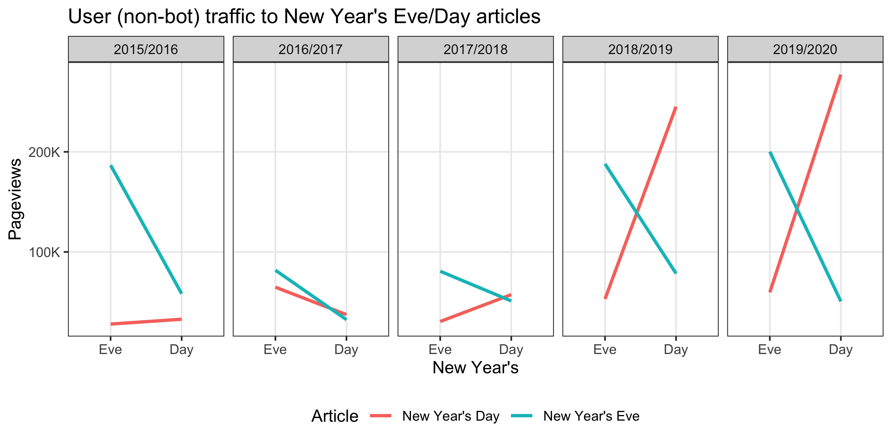
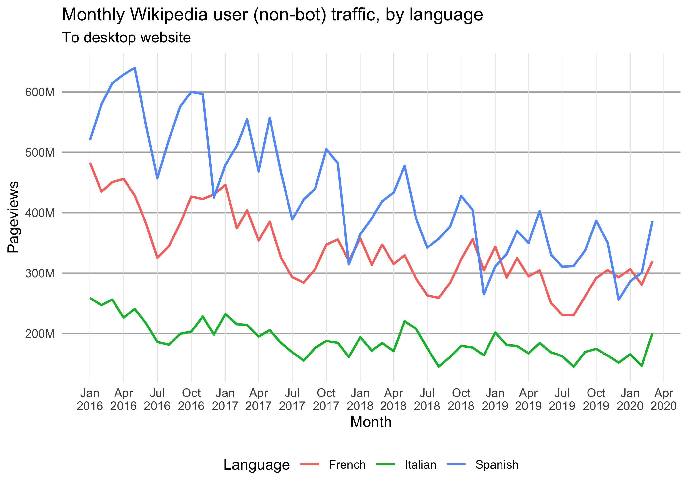
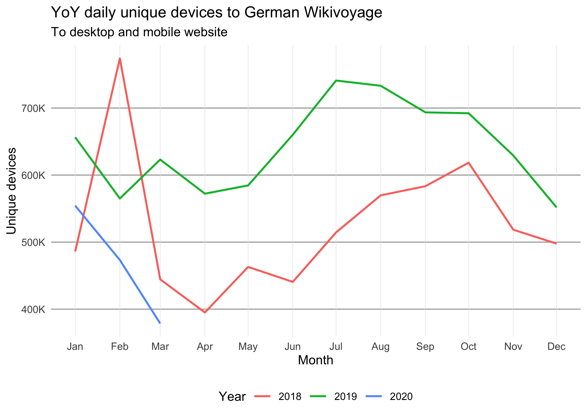
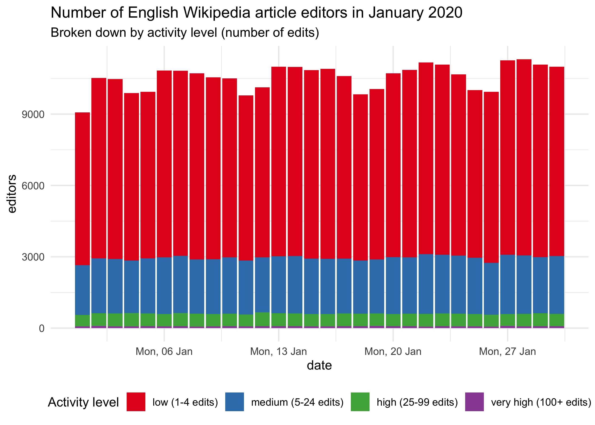
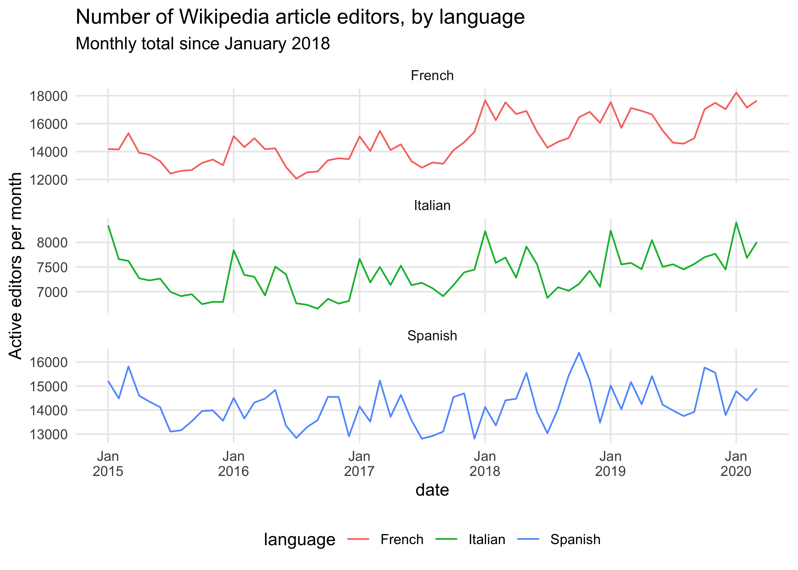

{waxer} makes the Wikimedia Analytics Query Service (AQS) REST API available and easy to use in R. With a consistent interface and output, {waxer} facilitates working with metrics & data available in AQS, especially when combined with modern data science frameworks like tidyverse for data wrangling.
Brief explanation of packages used: {purrr} makes it very easy to run multiple {waxer} queries programmatically, {dplyr} makes it easy to manipulate the obtained data, {lubridate} aids working with dates & times, and we use {ggplot2} for visualization. In some of these examples we will use purrr::map to apply a {waxer} function to a set of values we’re interested in while keeping all the other parameters constant. Here’s how map works:
fun <- function(a, b) {
return(a + b)
}
map(-1:1, fun, b = 2)
#> [[1]]
#> [1] 1
#>
#> [[2]]
#> [1] 2
#>
#> [[3]]
#> [1] 3Notice that the output is a list, which is map’s default behavior. We can also specify the output type by using the different flavors of map:
map_dbl(-1:1, fun, b = 2)
#> [1] 1 2 3
map_chr(-1:1, fun, b = 2)
#> [1] "1.000000" "2.000000" "3.000000"Since the output of {waxer}’s API-querying functions is always a tibble (an extension of a data.frame), we will mostly be using the map_dfr function which stitches several tibbles into one (via dplyr::bind_rows).
This package uses the same API endpoint as the {pageviews} package for page view data. Similar to {pageviews}, the caveat is that the traffic data is only available from 1 August 2015. For legacy view counts, refer to {wikipediatrend} package.
In this example we fetch the page-views for the New Year’s Eve and New Year’s Day articles on English Wikipedia. Specifically, we’re interested in user traffic, which excludes known spiders/bots.
pageviews <- wx_page_views(
project = "en.wikipedia",
page_name = c("New Year's Eve", "New Year's Day"),
access_method = "all",
agent_type = "user",
start_date = "20191231",
end_date = "20200101"
)pageviews
#> # A tibble: 4 x 3
#> page_name date views
#> <chr> <date> <int>
#> 1 New Year's Day 2019-12-31 59657
#> 2 New Year's Day 2020-01-01 277191
#> 3 New Year's Eve 2019-12-31 200158
#> 4 New Year's Eve 2020-01-01 50580In this case, the New Year’s Eve article was viewed much more on New Year’s Eve (December 31st) than on New Year’s Day. Similarly, the New Year’s Day article was viewed much more on New Year’s Day (January 1st) than on New Year’s Eve.
Now, suppose we wanted to see if this pattern is consistent across the years (starting with 2015/2016, since the API for pageviews starts from 2015-08-01). One way to do this would be to create start_date-end_date pairs across the years and use map2_dfr (not map_dfr) to iterate through the pairs:
new_years_dates <- tibble(
start_date = as.Date("2015-12-31") + years(0:4),
end_date = as.Date("2016-01-01") + years(0:4)
)
new_years_dates
#> # A tibble: 5 x 2
#> start_date end_date
#> <date> <date>
#> 1 2015-12-31 2016-01-01
#> 2 2016-12-31 2017-01-01
#> 3 2017-12-31 2018-01-01
#> 4 2018-12-31 2019-01-01
#> 5 2019-12-31 2020-01-01Notice that those are Dates, not “YYYYMMDD” strings. All of the start_date and end_date parameters in {waxer}’s functions accept either. This way we don’t have to use as.Date when we’re querying once and don’t have to use as.character on dates in situations like this.
new_years_views <- map2_dfr(
new_years_dates$start_date,
new_years_dates$end_date,
wx_page_views,
project = "en.wikipedia",
page_name = c("New Year's Eve", "New Year's Day"),
access_method = "all",
agent_type = "user",
granularity = "daily",
.id = "pair"
)head(new_years_views)
#> # A tibble: 6 x 4
#> pair page_name date views
#> <chr> <chr> <date> <int>
#> 1 1 New Year's Day 2015-12-31 27956
#> 2 1 New Year's Day 2016-01-01 32791
#> 3 1 New Year's Eve 2015-12-31 186715
#> 4 1 New Year's Eve 2016-01-01 58238
#> 5 2 New Year's Day 2016-12-31 64817
#> 6 2 New Year's Day 2017-01-01 37383new_years_views <- new_years_views %>%
mutate(
pair = factor(
new_years_views$pair, 1:5,
paste(2015:2019, 2016:2020, sep = "/")
),
day = case_when(
month(date) == 12 & mday(date) == 31 ~ "New Year's Eve",
month(date) == 1 & mday(date) == 1 ~ "New Year's Day"
),
day = factor(day, c("New Year's Eve", "New Year's Day"), c("Eve", "Day"))
)
head(new_years_views)
#> # A tibble: 6 x 5
#> pair page_name date views day
#> <fct> <chr> <date> <int> <fct>
#> 1 2015/2016 New Year's Day 2015-12-31 27956 Eve
#> 2 2015/2016 New Year's Day 2016-01-01 32791 Day
#> 3 2015/2016 New Year's Eve 2015-12-31 186715 Eve
#> 4 2015/2016 New Year's Eve 2016-01-01 58238 Day
#> 5 2016/2017 New Year's Day 2016-12-31 64817 Eve
#> 6 2016/2017 New Year's Day 2017-01-01 37383 Day
ggplot(new_years_views, aes(x = day, y = views)) +
geom_line(aes(color = page_name, group = page_name), size = 1) +
scale_y_continuous(
minor_breaks = NULL,
labels = scales::label_number(scale = 1e-3, suffix = "K")
) +
facet_wrap(~ pair, nrow = 1) +
labs(
title = "User (non-bot) traffic to New Year's Eve/Day articles",
color = "Article", x = "New Year's", y = "Pageviews"
) +
theme_bw() +
theme(legend.position = "bottom")
For consistency, the project parameter in every {waxer} function can only accept 1 value – unlike the page_name parameter in wx_page_views(). So if we want to get project views (the total number of page-views across all pages of a wiki), we can use the map_dfr to iterate through a named vector of projects, keeping all the other parameters the same:
projects <- c(
"French" = "fr.wikipedia",
"Italian" = "it.wikipedia",
"Spanish" = "es.wikipedia"
)
project_views <- map_dfr(
projects, wx_project_views,
access_method = "desktop", agent_type = "user",
granularity = "monthly", start_date = "20160101", end_date = "20200201",
.id = "language"
)head(project_views)
#> # A tibble: 6 x 3
#> language date views
#> <chr> <date> <int>
#> 1 French 2016-01-01 482886364
#> 2 French 2016-02-01 434907376
#> 3 French 2016-03-01 450673104
#> 4 French 2016-04-01 455875409
#> 5 French 2016-05-01 428361642
#> 6 French 2016-06-01 381467206ggplot(project_views) +
geom_line(aes(x = date, y = views, color = language), size = 0.8) +
scale_y_continuous(
minor_breaks = NULL,
labels = scales::label_number(scale = 1e-6, suffix = "M")
) +
scale_x_date(date_labels = "%b\n%Y", date_breaks = "3 month", minor_breaks = NULL) +
labs(
title = "Monthly Wikipedia user (non-bot) traffic, by language",
subtitle = "To desktop website",
x = "Month", y = "Pageviews", color = "Language"
) +
theme_minimal() +
theme(
panel.grid.major.x = element_line(color = "gray90", size = 0.2),
panel.grid.major.y = element_line(color = "gray70", size = 0.5),
legend.position = "bottom"
)
Top 1000 viewed articles each month from Jan 2019 to March 2019 on English Wikipedia:
top_viewed <- wx_top_viewed_articles(
project = "en.wikipedia",
granularity = "monthly",
start_date = "20190101",
end_date = "20190301"
)Top 3 articles from each month:
top_viewed %>%
# Exclude main page and other non-article pages:
filter(article != "Main_Page", !grepl("^(Special|Wikipedia)\\:.*", article)) %>%
group_by(date) %>%
top_n(3, views)
#> # A tibble: 9 x 4
#> # Groups: date [3]
#> date article views rank
#> <date> <chr> <int> <int>
#> 1 2019-01-01 Ted_Bundy 7293874 3
#> 2 2019-01-01 Louis_Tomlinson 5231127 4
#> 3 2019-01-01 XHamster 4039614 6
#> 4 2019-02-01 Freddie_Mercury 6464633 3
#> 5 2019-02-01 Louis_Tomlinson 5497023 4
#> 6 2019-02-01 Grover 4975383 5
#> 7 2019-03-01 Captain_Marvel_(film) 7070703 3
#> 8 2019-03-01 Luke_Perry 6362644 4
#> 9 2019-03-01 Us_(2019_film) 4590483 6To obtain the monthly estimated number of unique devices that visited German Wikivoyage from Jan 2018 to Feb 2020:
unique_devices <- wx_unique_devices(
project = "de.wikivoyage",
granularity = "monthly",
access_method = "all",
start_date = "20180101",
end_date = "20200228"
)head(unique_devices)
#> # A tibble: 6 x 4
#> date devices offset underestimate
#> <date> <int> <int> <int>
#> 1 2018-01-01 486037 388266 97771
#> 2 2018-02-01 773938 425827 348111
#> 3 2018-03-01 444519 349013 95506
#> 4 2018-04-01 395088 311396 83692
#> 5 2018-05-01 463003 364774 98229
#> 6 2018-06-01 440723 351782 88941Which we can visualize with a periodicity plot:
unique_devices$year <- factor(year(unique_devices$date))
year(unique_devices$date) <- 2018
ggplot(unique_devices) +
geom_line(aes(x = date, y = devices, color = year), size = 0.8) +
scale_y_continuous(
minor_breaks = NULL,
labels = scales::label_number(scale = 1e-3, suffix = "K")
) +
scale_x_date(date_labels = "%b", date_breaks = "1 month", minor_breaks = NULL) +
labs(
title = "YoY daily unique devices to German Wikivoyage",
subtitle = "To desktop and mobile website",
x = "Month", y = "Unique devices", color = "Year"
) +
theme_minimal() +
theme(
panel.grid.major.x = element_line(color = "gray90", size = 0.2),
panel.grid.major.y = element_line(color = "gray70", size = 0.5),
legend.position = "bottom"
)
Suppose we wanted to get the daily number of non-bot active editors of content pages on English Wikipedia in January 2020. This is easy with {waxer}’s wx_active_editors function:
active_editors <- wx_active_editors(
project = "en.wikipedia", editor_type = "user", page_type = "content",
start_date = "20200101", end_date = "20200131"
)head(active_editors)
#> # A tibble: 6 x 2
#> date editors
#> <date> <int>
#> 1 2020-01-01 9072
#> 2 2020-01-02 10522
#> 3 2020-01-03 10475
#> 4 2020-01-04 9880
#> 5 2020-01-05 9941
#> 6 2020-01-06 10834Suppose we wanted to visualize these daily counts broken down by activity level:
activity_levels <- c(
"low" = "1-4",
"medium" = "5-24",
"high" = "25-99",
"very high" = "100+"
)
active_editors_by_activity <- map_dfr(
activity_levels,
wx_active_editors,
project = "en.wikipedia", editor_type = "user", page_type = "content",
start_date = "20200101", end_date = "20200131",
.id = "activity_level"
)head(active_editors_by_activity)
#> # A tibble: 6 x 3
#> activity_level date editors
#> <chr> <date> <int>
#> 1 low 2020-01-01 6423
#> 2 low 2020-01-02 7592
#> 3 low 2020-01-03 7572
#> 4 low 2020-01-04 7036
#> 5 low 2020-01-05 7008
#> 6 low 2020-01-06 7856active_editors_by_activity <- active_editors_by_activity %>%
mutate(
activity_level = factor(
activity_level,
names(activity_levels),
sprintf("%s (%s edits)", names(activity_levels), activity_levels)
)
)
ggplot(active_editors_by_activity, aes(x = date, y = editors)) +
geom_col(aes(fill = activity_level)) +
scale_x_date(date_labels = "%a, %d %b") +
scale_fill_brewer("Activity level", palette = "Set1") +
labs(
title = "Number of English Wikipedia article editors in January 2020",
subtitle = "Broken down by activity level (number of edits)"
) +
theme_minimal() +
theme(legend.position = "bottom")
Similarly, we can obtain the (monthly) totals for several Wikipedias. This time we’re not breaking down by activity level (which is the default behavior for this function):
active_editors_by_wiki <- map_dfr(
projects,
wx_active_editors,
editor_type = "user", page_type = "content",
start_date = "20150101", end_date = "20200301",
granularity = "monthly",
.id = "language"
)head(active_editors_by_wiki)
#> # A tibble: 6 x 3
#> language date editors
#> <chr> <date> <int>
#> 1 French 2015-01-01 14184
#> 2 French 2015-02-01 14153
#> 3 French 2015-03-01 15313
#> 4 French 2015-04-01 13916
#> 5 French 2015-05-01 13766
#> 6 French 2015-06-01 13313ggplot(active_editors_by_wiki) +
geom_line(aes(x = date, color = language, y = editors)) +
scale_x_date(date_breaks = "1 year", minor_breaks = NULL, date_labels = "%b\n%Y") +
scale_y_continuous(minor_breaks = NULL) +
facet_wrap(~ language, ncol = 1, scales = "free_y") +
labs(
title = "Number of Wikipedia article editors, by language",
subtitle = "Monthly total since January 2018",
y = "Active editors per month"
) +
theme_minimal() +
theme(legend.position = "bottom")